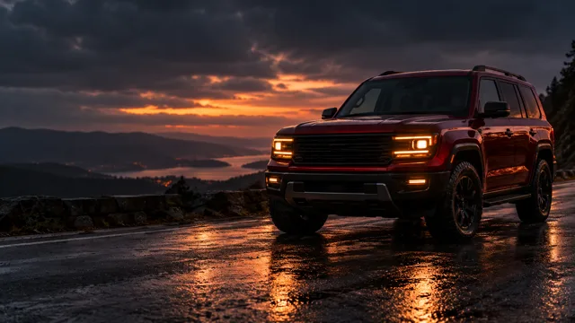

Choose a four-wheel vehicle
The instructor set bikes aside for this session because their workflow is different. Choose a car, SUV, or sedan.
WEEK 8 · DAY 1 / SESSION 15 · MOTION
Create an automobile advertisement from a chosen vehicle, consistent visual references, a shot plan, and motion clips that keep the vehicle recognizable.
Live session · November 21, 2026 · 8:00–10:00 PM IST

BEFORE YOU GENERATE
The instructor set bikes aside for this session because their workflow is different. Choose a car, SUV, or sedan.
Gather useful views from multiple angles and keep the vehicle colour the same across the set. Similar body shapes can make a model blend details between vehicles.
If the generated body shape or identifying details keep changing, strengthen the references or choose a vehicle the image model can represent more reliably.
LIVE SHADOW SESSION
The session was taught as a live demonstration with time to experiment. Watch how the instructor checks references, camera angles, motion and failures before moving to the next shot.
01 · VEHICLE REFERENCES
Start with a clear view of the chosen car and compare the model's output with the source. Keep the colour and vehicle identity aligned across references. Check features that distinguish the selected vehicle from similar models, such as the grille, lamps, bumpers, air intakes and body lines.
Why it matters: A model with weak vehicle references may change those details or combine them with a similar design. More generations will not fix a poor reference choice by themselves.
First fix: Recheck the reference set. If the vehicle remains inaccurate, switch to a better-supported vehicle before you build the full ad around it.
02 · SCENES AND CAMERA
Plan the ad as individual shots. When you need a camera angle that is hard to create directly, use an image that guides the camera position, then regenerate the vehicle in the intended setting. A 3D viewer can provide a view to use as that camera guide.
Choose the image reference and camera control that fit the shot. A three-quarter view does not guarantee a perfect side profile; the lesson showed that some model controls have limits.
Carry forward: Keep the approved vehicle reference and any angle guide with the matching shot in your plan.

Use your own vehicle references for production. This artwork only sets the lesson mood.
03 · MOTION CHOICE
First decide what the shot must do: hold the car still while the camera moves, track a moving car, orbit around it, or show an action such as a drift and stop. Then choose the video method that fits that shot. The instructor's larger examples combined methods rather than limiting the whole concept to one technique.
Use start and end frames when they are related: the same vehicle and scene, with a clear change between them. If the endpoints are unrelated, the model has to invent too much and may change the vehicle or background.
First fix: Make the endpoints coherent or choose another method for that shot. Keep the surrounding scene and parallax stable unless a change is part of the intended move.
04 · MOTION AND FINISH
Use concise prompts that state the action and camera move. Check wheel rotation, road contact, water spray, background motion and camera distance against the intended action. If one motion becomes confused, simplify that shot before asking for another variation.
Generated audio may be missing or unsuitable. The class discussion recommends treating common vehicle sounds as separate sound effects when needed, so you can review the image and motion without wasting generation attempts on audio.
Output: Assemble the clips that work into an automobile advertisement draft. The transcript did not specify duration, aspect ratio, export settings or a separate submission destination.
PRODUCTION DECISIONS
Compare the output with the reference set. Keep colour consistent, add a missing useful angle, or choose a better-supported vehicle.
Use an image or 3D-viewer frame to guide the camera position, then generate the intended vehicle view.
Use compatible frames of the same vehicle and scene, or choose a different motion method for that shot.
Review camera path, wheel rotation, road contact, water and background movement. Simplify the shot and adjust the part that failed first.
SOURCE PROMPTS
These complete examples come from the supplied “Automobile video production” source Doc. The start/end camera prompt contains a repeated instruction paragraph in the source; it is retained below as supplied. Adapt the shot idea to your own reference and method.
An ultra realistic low angle front side image of a red TATA Sumo with yellow headlights in a rainy ambience
Source: Automobile video production Doc, section “TATA SUMO AD.”
Create an ultra realistic mocobot movement from the start frame to the end frame. As the car is standing still, the camera is moving down from start frame to end frame to mimic a mocobot alike motion. Strictly do not make any sudden shift in background that breaks natural physics, also keep the parallax as it is. As the car is standing still, the camera is moving down from start frame to end frame to mimic a mocobot alike motion. Strictly do not make any sudden shift in background that breaks natural physics, also keep the parallax as it is.
Source: Automobile video production Doc, section “TATA SUMO AD.”
A parallel fixed focal length tracking shot of the car in the reference moving at high speed while its raining moderately, there should be motion blur for the background, and slight rainwater splash on the road. make sure the wheel movement and rotation follow real physics.
Source: Automobile video production Doc, section “TATA SUMO AD.”
A tracking shot of car moving at high speed in rain, with same focal distance from camera throughout.
Source: Automobile video production Doc, section “TATA SUMO AD.”
A low angle 180 degree rotation around the car in the same camera angle.
Source: Automobile video production Doc, section “TATA SUMO AD.”
A dolly out shot as the car performs a drift and stop. make sure all movements, including water splash and wheel rotation follows physics.
Source: Automobile video production Doc, section “TATA SUMO AD.”
TOOLS MENTIONED IN CLASS
The source transcript mentions these image tools during the vehicle-reference work. Their names reflect the class recording; they are not requirements for the task. Check current availability in your account.
Find the chosen vehicle from several useful angles and keep its colour consistent.
Image models compared in class for generating vehicle references and camera views.
Used with the same image prompt to compare vehicle image results.
SOURCE MATERIAL
The “Automobile video production” source Doc is cited in the official Homework Doc alongside these prompt examples.
Tata Sumo ad · supplied Drive video Automobile ad · supplied YouTube referenceThe vehicle image in the page hero is illustrative artwork. The linked clips and prompts are the source examples; the generated hero image is not presented as an instructor result.
TAKE IT INTO PRACTICE
Use the playbook to collect references, choose a method for each shot, check the motion and record your draft and next fix in the Homework Doc.